seed から、1 本のシェーダへ
seed を入れると、127 種類の Generator から組み合わせが決定的に選ばれ、1 本のフラグメントシェーダに組み上がります。同じ seed なら、いつ開いても同じ見た目。気に入った画は seed の文字列を控えておけば再現できます。
-
seed を入れる
iris-engine-404 -
Generator を選んで重ねる
wiressourcebusJacquardsourcenoisefieldmirrormodifierscanSlipmodifiercrtmaterial
-
GLSL に組み立てる
選ばれた Generator のコードを 1 本のフラグメントシェーダにまとめ、音の解析値を uniform で流し込みます。
-
音に合わせて描く
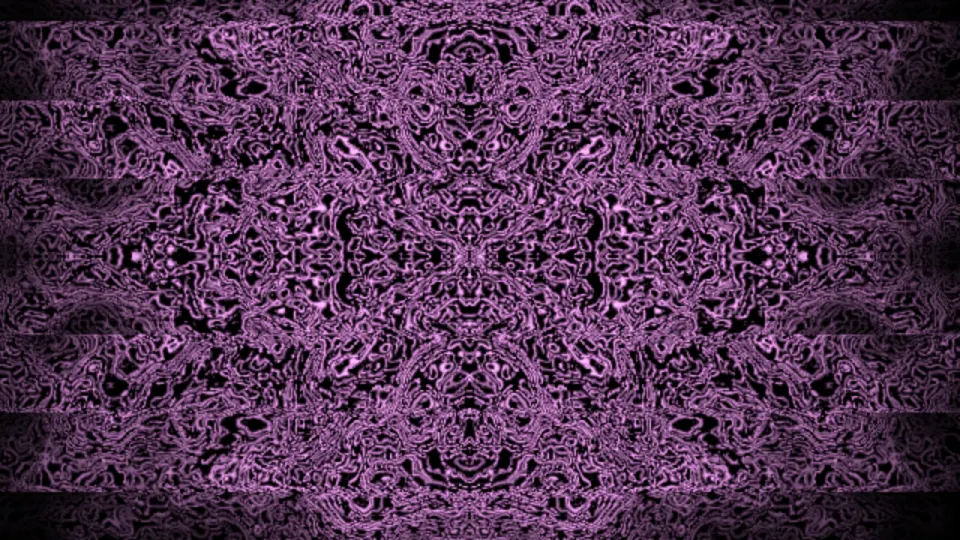
- source 60
- 形を生む。線、格子、粒子、SDF の立体、スペクトラム。
- field 17
- ノイズや流れなど、面に広がる場。
- modifier 23
- 鏡像、万華鏡、ずれ、渦。座標を曲げる。
- material 27
- CRT、リソグラフ、網点、金箔。最後の質感。
同じエンジン、別の seed
どれもアプリに seed を入れて撮ったフレームです。キャプションは seed と、そこから選ばれた Generator。
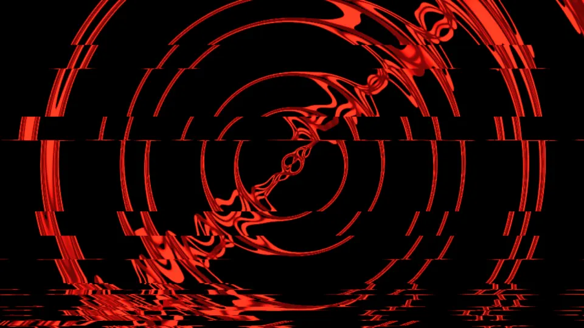
laser-fern-090mooringRope › ripple › scanSlip › brakeLightRain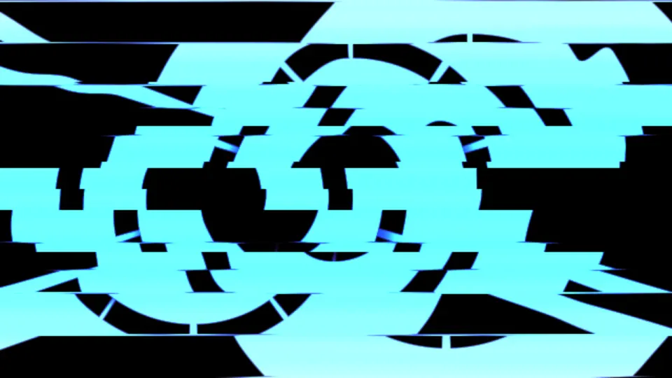
jade-pulse-616concentric › sunburst › typhoonShear › sleeperRail › slice › karaokeLcd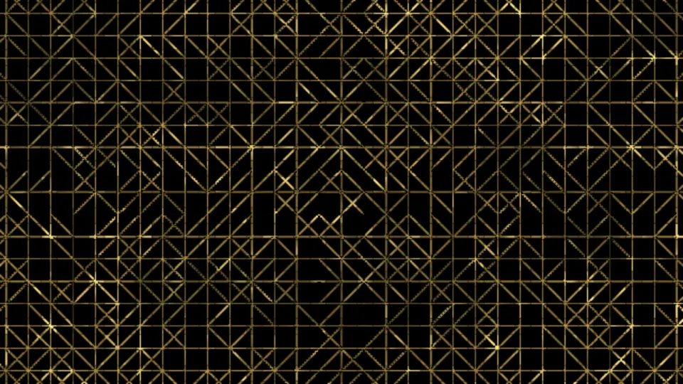
acid-lotus-301kumiko › spectrumRadial › scooterSlipstream › pulse › xerox › goldfoil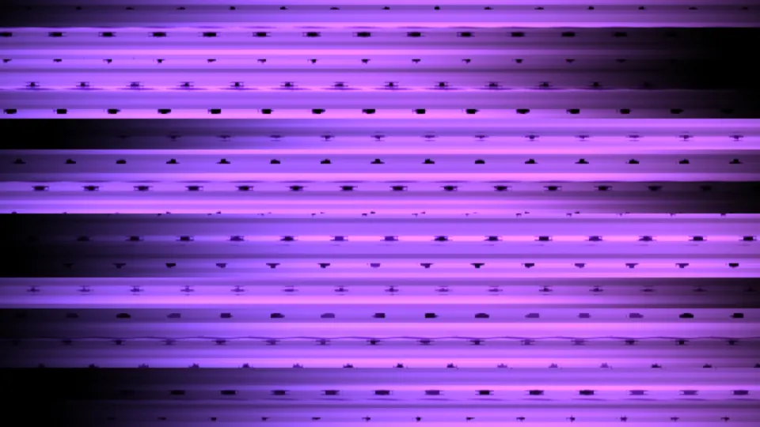
dawn-relay-149auroraCurtain › chainlink › scooterSlipstream › slice › crt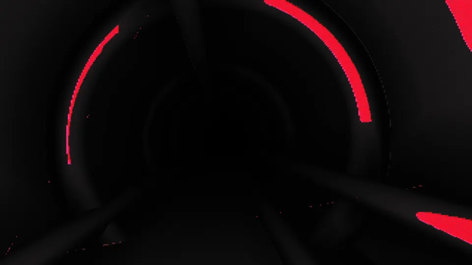
glass-koi-128sdfTunnel › xerox › corruptSave › riso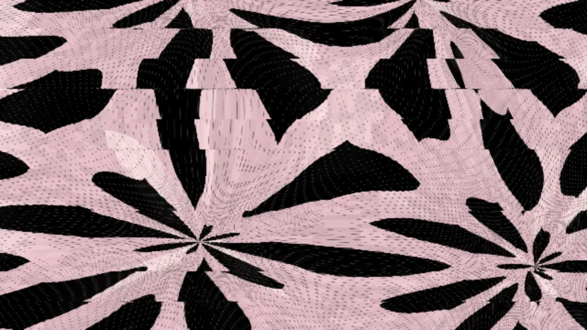
nova-harbor-010chainlink › humidityLens › sway › threshold › slice › halftone › bathroomGlaze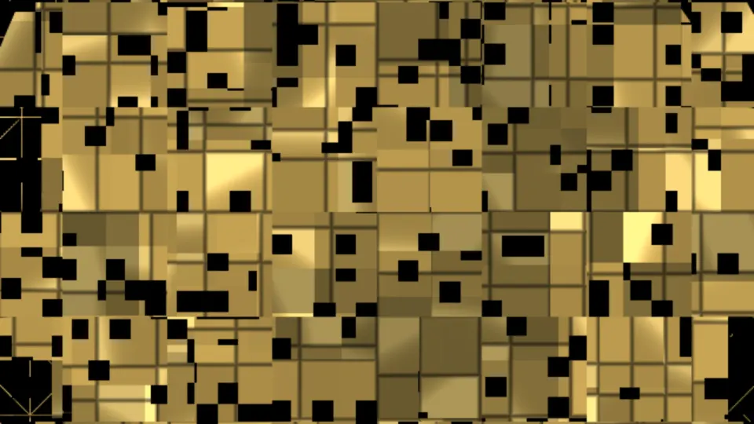
ember-loom-033concentric › kumiko › threshold › dropout › macroblock › goldfoil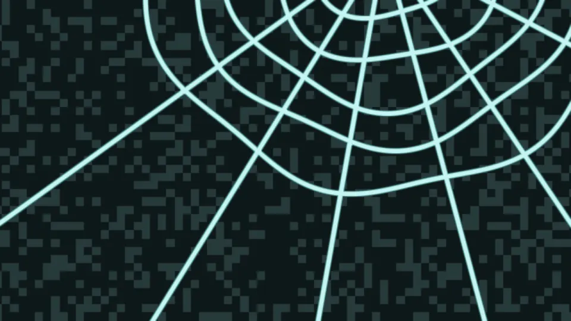
solar-koi-909spectrumBars › fanGuard › pulse › invert › freezerCyan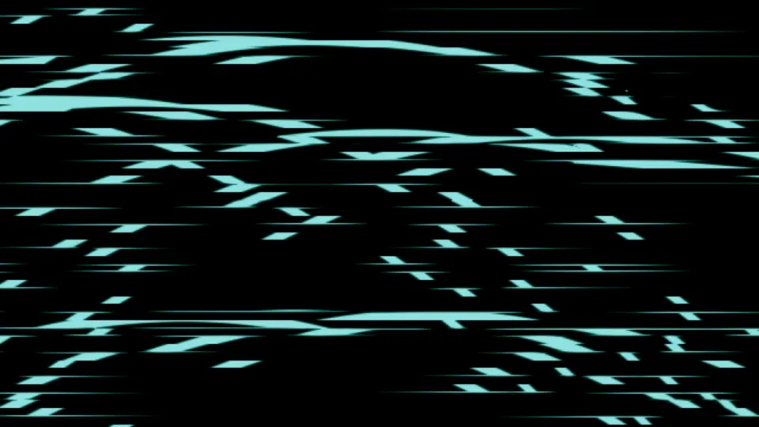
cobalt-fern-214wires › harborBackwash › coneField › interlaceComb › neonカタログの 127 Generator
pnpm vj:preview --contact-sheet で書き出した一覧です。Generator を 1 つずつ、既定のパラメータで単独描画しています。Patch を組む前に、まずここで目で選びます。

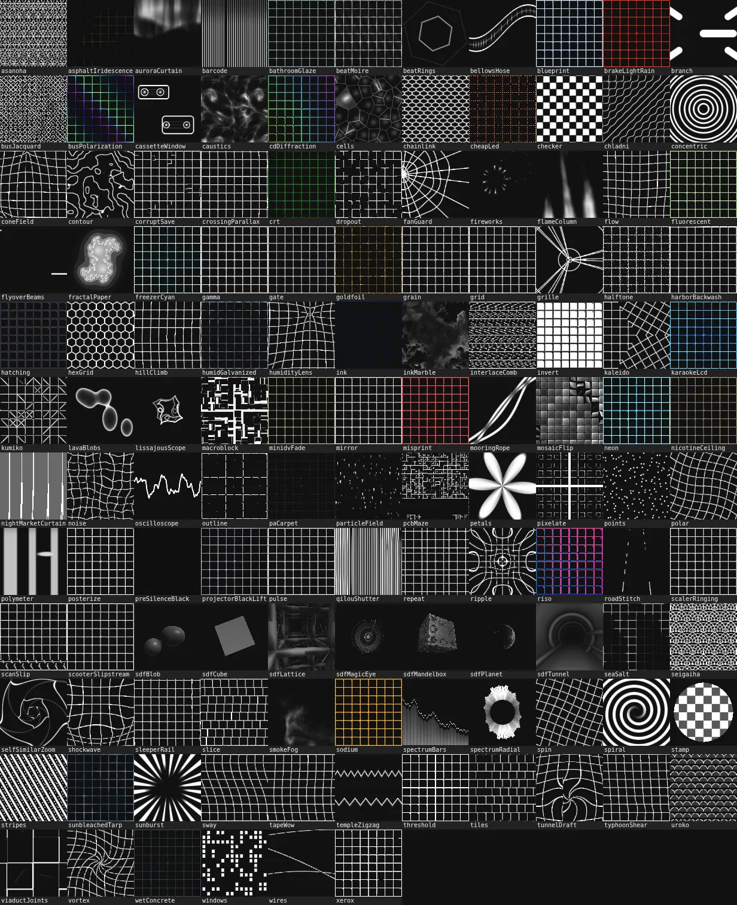
音を聴いて、絵が変わる
- look gacha
- R で seed を引き直すと、配色、構図、Generator の組み合わせまでまとめて変わります。切り替えはクロスフェード。D なら構成はそのままに細部だけ引き直します。
- 音への反応
- マイク、ライン入力、ループバックを解析します。bass / mid / treble が Patch のパラメータを動かし、拍で起きるグリッチの種類は Patch ごとに決まります。無音ではほぼ止まり、大音量が続いても画面が暗く沈むことはありません。
- テンポ同期
- 低域のオンセットから BPM を推定してビートグリッドを作ります。ブレイク中も拍を刻み続け、TAP で手動指定もできます。N 小節ごとの自動ガチャも拍に合わせて進みます。
- スペクトラムと波形
-
128 バンドのスペクトラムと 256 サンプルの波形を GPU に送り、
spectrumBars、oscilloscope、lissajousScopeなどの Generator が直接読みます。 - Timeline
- seed の変更やトランジションを N 秒後、N 小節後に予約できます。演出を記録して JSON に書き出し、あとから再生することもできます。
- 画像を素材に
- PNG / JPG / WebP / SVG をページにドロップすると、Patch が読む画像として使えます。
- 内蔵 GPU で 1080p
- ノート PC の内蔵 GPU での常用を想定しています。重くなると内部解像度を段階的に下げてフレームレートを保ち、余裕が戻れば元に戻します。
本番の卓で
メイン窓は ?ui=hide でフルスクリーンにしてプロジェクターへ。操作は手元の別窓から行います。
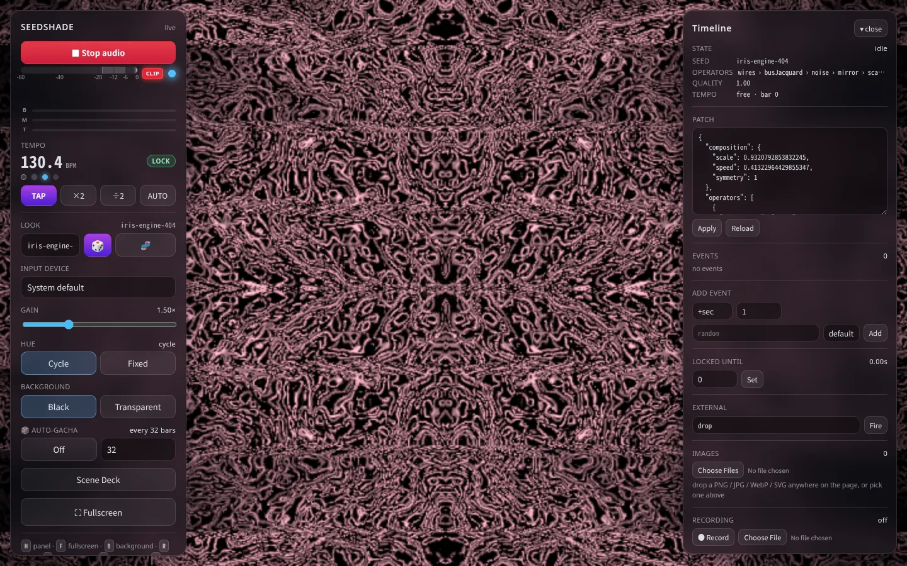
メイン窓
左がコントロールパネル、右が Timeline。パネルはマウスを止めると消え、H で隠せます。
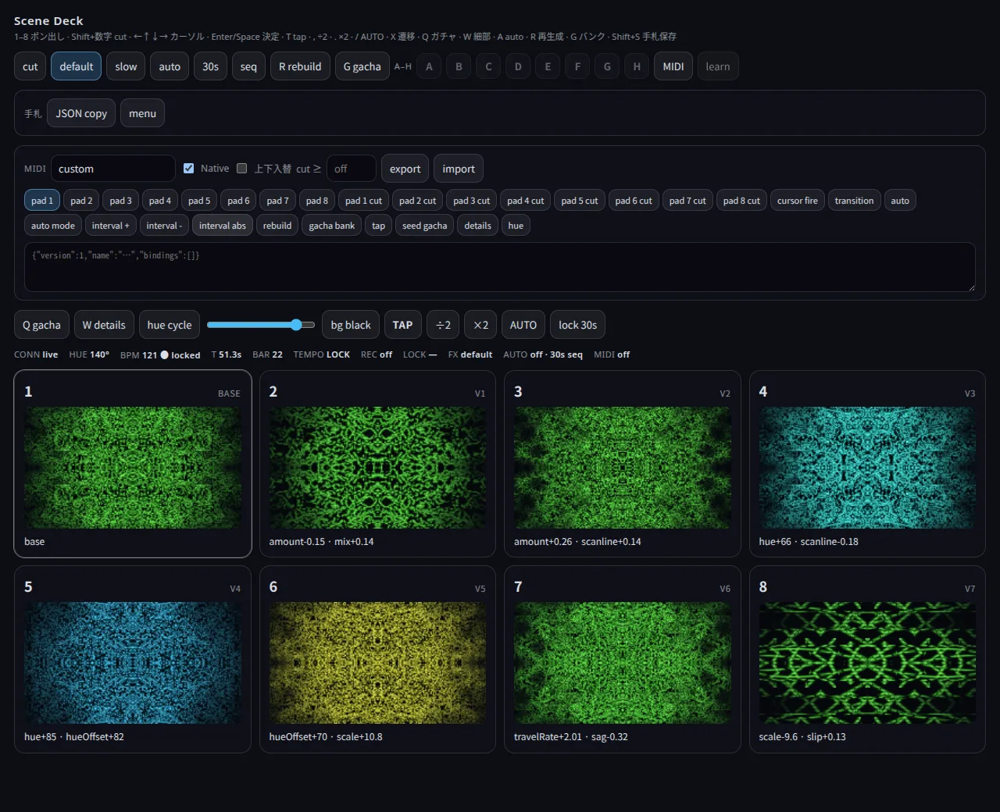
Scene Deck
いまの Patch から 8 面のバリエーションを作り、1〜8 でポン出しする別窓の操作卓です。秒や小節での自動送り、手札の保存（A〜H）、JSON での持ち運びもできます。Deck 窓では音声解析も描画ループも起動しないので、マイクの許可も常時の GPU 負荷もありません。
MIDI
Deck は Web MIDI を受けます。nanoPAD2 は Native モードで自動マップ、ほかのコントローラは learn で割り当て。Deck が背面にあっても反応します。
OBS にそのまま重ねる
?bg=transparent&ui=hide を付けて OBS のブラウザソースに入れると、背景は透過のまま出力されます。?mirror=1 の表示専用窓を足せば、複数の画面に同じ映像を出せます。
演出を AI に任せる
中継（ローカルの bridge か、Cloudflare Workers の room）越しに、CLI からパネルと同じ操作ができます。Claude Code 用のスキル vj-director を同梱しているので、「サビで青く静かに」と頼めば、気分語から Patch を合成して小節単位で予約するところまで、AI が CLI を叩いて進めます。
vj:gen気分語から Patch を合成するvj:tweakいまの Patch の一部だけ差し替えるvj:recipeムードと seed と差分を JSON で持ち回るvj:setセットを cue として仕込み、本番で順に出すvj:previewPatch を PNG に描いて、送る前に確かめる
# room を作り、返ってきた pageUrl をブラウザで開く
$ node scripts/vj-ctl.mjs room --host seedshade.tainakanchu.com
# 気分語から Patch を合成して送る
$ export VJ_URL=wss://seedshade.tainakanchu.com/room/<id>
$ pnpm vj:gen "雲 静寂 青"
# 8 小節後に、ゆっくり別の seed へ
$ node scripts/vj-ctl.mjs --url $VJ_URL \
event add --bar 8 --seed take-2 --transition slow3 ステップで始める
-
アプリを開く
seedshade.tainakanchu.com を WebGL2 が使えるブラウザで開きます。インストールは要りません。
-
マイクを許可する
許可すると、すぐに音へ反応し始めます。流している曲に反応させたいときは、Input device でループバックを選びます。始まらなければパネルの「Click to start audio」を押してください。
-
R を押す
気に入る画が出るまで引き直します。H でパネルを隠し、F でフルスクリーン、S で Scene Deck。
動作環境
- WebGL2 が使えるブラウザ。使えない環境では何も描画されません。
- マイク、またはループバック デバイス（Windows は VB-CABLE、macOS は BlackHole、Linux は PipeWire / PulseAudio の Monitor）。
- MIDI を使うなら Chrome か Edge。Firefox はアドオンが必要で、Safari は非対応です。
- 音声の解析はブラウザの中だけで行われ、音はどこにも送られません。